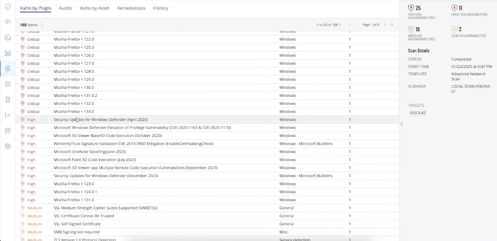
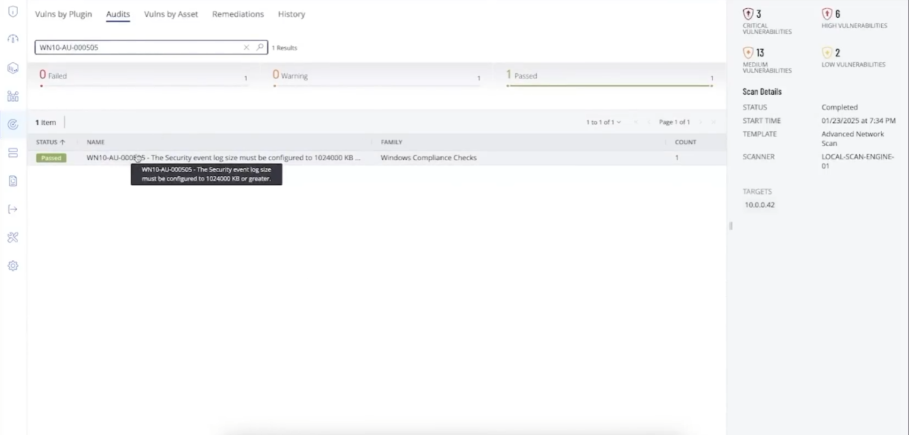

TENABLE + AZURE / GUIDED PERSONAL LAB
Finding vulnerabilities
and checking the fixes
I followed a guided lab to practice scanning a Windows VM, understanding the findings, and fixing a few of them. The main lesson was the full cycle: discover a problem, make a change, then scan again to see whether it worked.
Resource names and private IPs below are illustrative, following my Azure honeypot naming style. The supplied screenshots and counts show the tutorial’s Windows 10 run; this build uses Windows 11 Pro, like my honeypot lab.
Start with a resource group and network
The Azure resources sit in Vuln-Lab, a resource group that keeps the lab together. Inside it, VNet-Vuln-Lab is the virtual network, and its default subnet is the smaller network segment used by the computers.
The target VM and internal scanner share this network so the scanner can reach the VM’s private IP. In this example, the subnet is 10.0.1.0/24, the VM is 10.0.1.4, and the scanner is 10.0.1.5.
Create and prepare the Windows VM
VM-CORP-CENT-3 uses the Windows 11 Pro image in Central US. A virtual machine is a computer running on cloud hardware; Remote Desktop lets me sign in and use its desktop.
Preparation lets the scanner reach Windows and perform administrator-level checks. The tutorial turns off Windows Firewall and sets LocalAccountTokenFilterPolicy to 1, allowing a local administrator account to use its full permissions remotely.
Learning point: these changes relax protection for the exercise. For a retained setup, restrict the Azure network security group and Windows firewall to the required scanner connections, and remove temporary access afterward. Tenable’s Windows scan requirements ↗
Connect the scanner and configure the scan
Tenable Vulnerability Management is the web console for configuring scans and reviewing weaknesses. A linked Nessus scanner does the checks and sends results back. This lab follows the tutorial’s internal-scanner approach.
In an Advanced Network Scan, named Vuln-Lab-Scan here, I select the internal scanner and the target’s private IP. Adding the VM’s Windows administrator credentials makes this a credentialed scan: it can inspect installed software, patches, and settings inside Windows.
The scan options include starting Remote Registry, enabling administrative shares, and starting the Server service. These provide access to Windows settings and administrative file shares during the checks. No agent needs to be installed on the target for this scanning method. How Tenable uses credentials ↗
- Tenable consoleConfigure the scan
- Internal scannerRun the checks
- Windows VMInspect with credentials
- Tenable resultsReview the findings
Take a baseline and check security settings
The first scan is the baseline—a starting point before deliberately adding problems. I review Vulns by Plugin for software findings. A plugin is an individual scanner check, with details about what it found and a suggested solution.
The tutorial also adds a DISA STIG audit. STIGs are Security Technical Implementation Guides: checklists of security settings. These results appear under Audits. For Windows 11, select the matching Windows 11 audit; the reference screenshots use Windows 10 checks.
Remember: finding outdated software and finding a setting that fails a checklist are related tasks, but they produce different results to review.
Introduce problems and compare a second scan
The exercise deliberately installs an old Firefox 110 release and enables the built-in Guest account. Running the same scan again makes the effect visible: many Firefox findings appear, and the check requiring Guest to be disabled fails.
I use History to compare the correct runs, then open individual findings to read the affected software, severity, and solution. One outdated application can trigger many checks because it is missing fixes from multiple later releases.

Fix the application and three settings
I followed the exercise’s approach of uninstalling the old Firefox version. Updating an application can also fix vulnerabilities; removing it makes sense when it is no longer needed.
The configuration changes focus on three checks:
- Disable Guest: turn off an unnecessary built-in account.
- Rename Guest: change its default name, using
Lab-Visitorhere. It stays disabled; renaming alone is not an access control. - Increase the Security event log limit: set it to 1,024,000 KB so more audit history can be retained before the log fills.
The tutorial changes the log-size policy in Registry Editor, using the MaxSize DWORD under HKLM\SOFTWARE\Policies\Microsoft\Windows\EventLog\Security. The registry stores Windows configuration. The documented policy route is Computer Configuration → Administrative Templates → Windows Components → Event Log Service → Security. Windows 11 log-size control reference ↗
Rescan, update Windows, and verify again
The third scan checks the application removal and configuration fixes. In the reference results, Firefox findings disappear and the three targeted audit checks pass.
The next step is Windows Update: install available updates, restart when required, and check again. A fourth scan records the remaining findings. Keeping the target and scan settings consistent makes the comparison more useful.
Learning point: applying a fix is an action; a successful follow-up check is evidence that it addressed the finding.
WHAT I FOUND
The results improved, with work still remaining
The supplied results show four scans: baseline, after introducing problems, after targeted fixes, and after Windows updates. These are reference counts, not measured totals for the Windows 11 build.
| Severity | Scan 1 | Scan 2 | Scan 3 | Scan 4 |
|---|---|---|---|---|
| Critical | 1 | 25 | 3 | 0 |
| High | 15 | 11 | 6 | 6 |
| Medium | 31 | 16 | 13 | 11 |
| Low | 3 | 3 | 2 | 2 |
| Total | 50 | 55 | 24 | 19 |
The final reference scan has zero critical findings, but 19 findings remain—including six high. That calls for further review. The blank fifth scan in the source spreadsheet is not a completed clean scan.
Some categories also decrease between the first two scans. The tutorial suggests background updates, but does not establish the cause. I would compare individual findings before attributing every count change to one fix.
View the passing Security log-size check

QUICK RECALL
The things I want to remember
| Remember | Meaning |
|---|---|
| Credentialed scan | Uses a login to inspect the computer internally. Verify that authentication succeeded. |
| CVE | An identifier for a publicly disclosed vulnerability; it is not proof someone exploited it. |
| CVSS / severity | The Common Vulnerability Scoring System scores vulnerability severity. Prioritize with exposure, the affected system, and available fixes too. |
| STIG audit | Checks settings against a security checklist. Match the audit to the operating system. |
| Remediation | Addresses the cause: patch, remove unneeded software, or correct a setting. |
| Rescan | Checks whether the finding is gone. A lower count alone does not prove every fix worked. |
If the results look unexpectedly empty: check the target IP, scanner connectivity, credentials, and whether authenticated checks actually ran. A completed scan can still have limited visibility.
After a cloud lab: save the results and remove resources that are no longer needed. Leaving disks or other billable resources behind can still incur costs.
Recap
“I followed a guided Tenable lab to practice finding and fixing vulnerabilities on a Windows VM in Azure. I learned how a credentialed scan checks installed software and security settings, then worked through removing outdated software, changing a few settings, and updating Windows. The main takeaway was to rescan and review the remaining findings instead of assuming that applying an update means the computer is fully secure.”